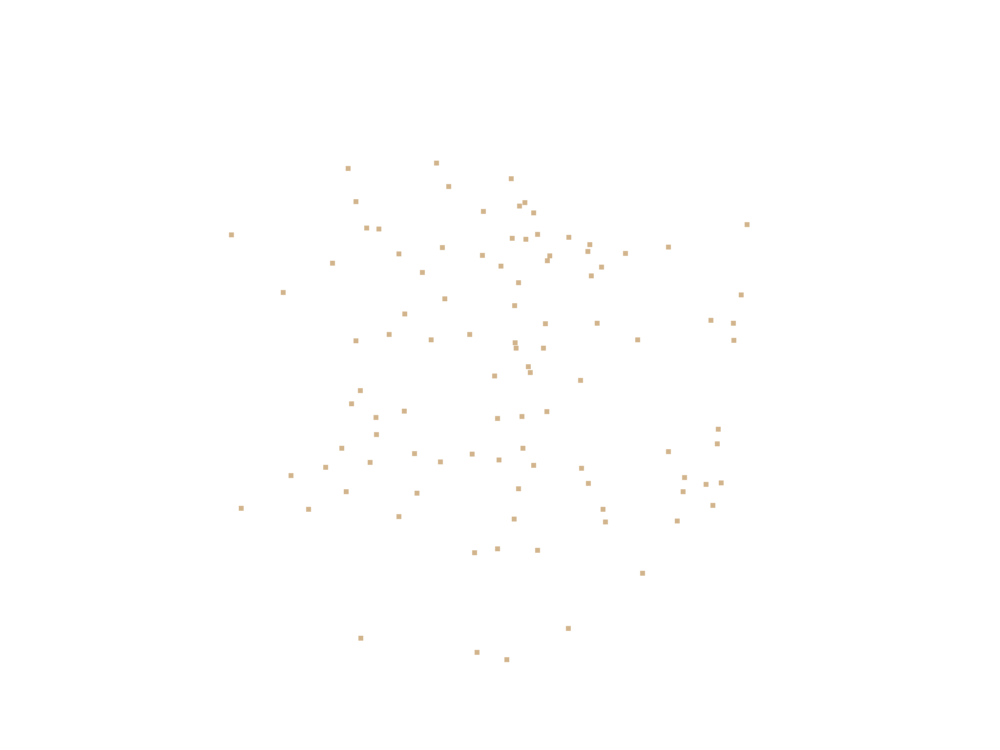
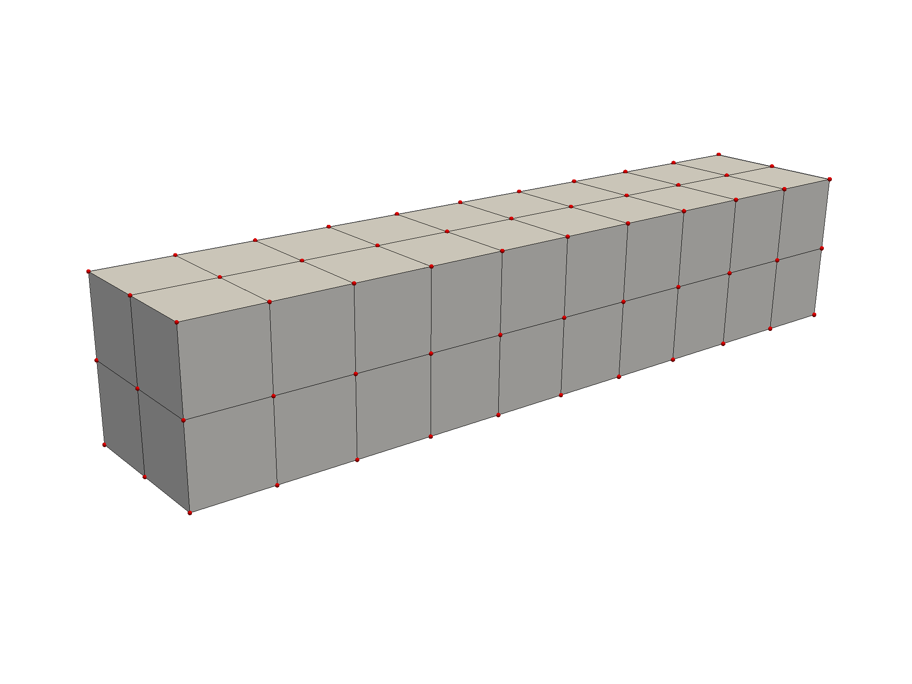
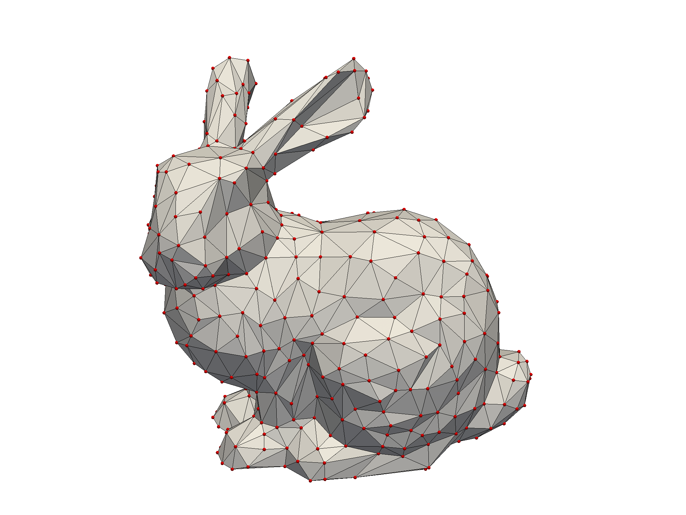
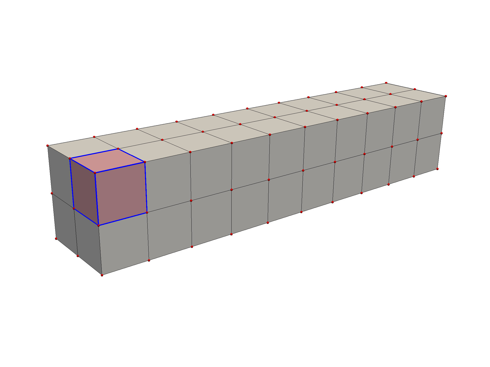
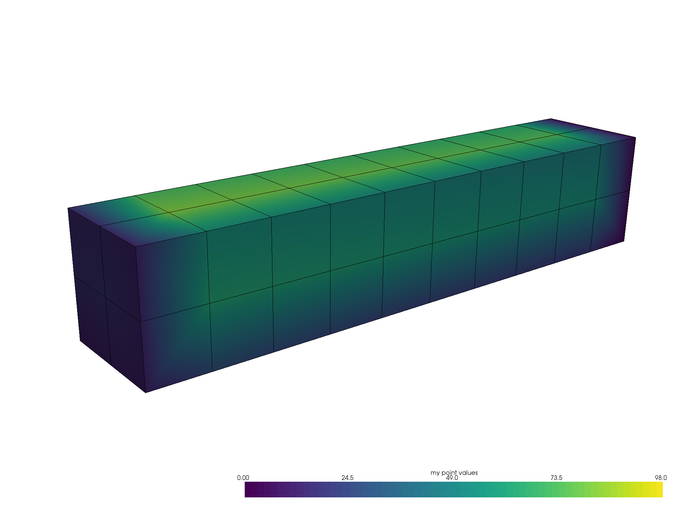
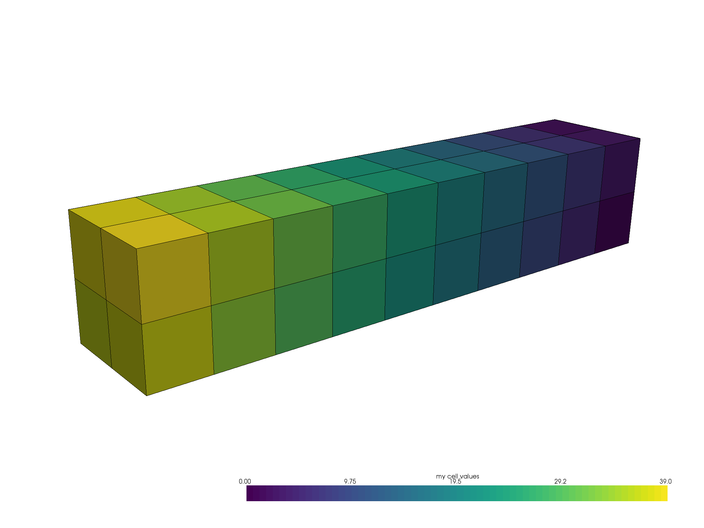
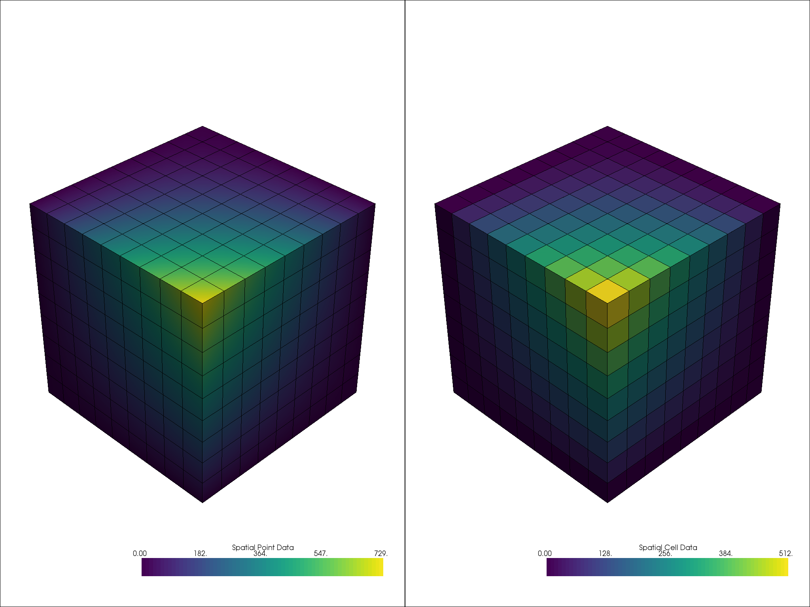

What is a Mesh?¶
In PyVista, a mesh is any spatially referenced information and usually consists of geometrical representations of a surface or volume in 3D space. We commonly refer to any spatially referenced dataset as a mesh, so often the distinction between a mesh, a grid, and a volume can get fuzzy - but that does not matter in PyVista. If you have a dataset that is a surface mesh with 2D geometries like triangles, we call it a mesh and if you have a dataset with 3D geometries like voxels, tetrahedrals, hexahedrons, etc., then we also call that a mesh! Why? Because it is simple that way.
In all spatially referenced datasets, there lies an underlying mesh structure - the connectivity or geometry between nodes to define cells. Whether those cells are 2D or 3D is not always of importance and we’ve worked hard to make PyVista work for datasets of either or mixed geometries so that you as a user do not have to get bogged down in the nuances.
What is a Node?¶
Nodes are the vertices of the mesh - the XYZ coordinates of the underlying structure. All PyVista datasets (meshes!) have nodes and sometimes, you can have a mesh that only has nodes - like a point cloud.
For example, you can create a point cloud mesh using the
pyvista.PolyData class which is built for meshes that have 1D and 2D
cell types (we’ll get into what a cell is briefly).
Let’s start with a point cloud - this is a mesh type that only has vertices. You can create one by defining a 2D array XYZ coordinates like so:
import numpy as np
import pyvista as pv
nodes = np.random.rand(100, 3)
mesh = pv.PolyData(nodes)
mesh.plot(point_size=10, screenshot='random_nodes.png')

But it’s import to note that most meshes have some sort of connectivity between nodes such as this gridded mesh:
from pyvista import examples
mesh = examples.load_hexbeam()
bcpos = [(6.20, 3.00, 7.50),
(0.16, 0.13, 2.65),
(-0.28, 0.94, -0.21)]
p = pv.Plotter()
p.add_mesh(mesh, show_edges=True, color='white')
p.add_mesh(pv.PolyData(mesh.points), color='red',
point_size=10, render_points_as_spheres=True)
p.camera_position = [(6.20, 3.00, 7.50),
(0.16, 0.13, 2.65),
(-0.28, 0.94, -0.21)]
p.show(screenshot='beam_nodes.png')

Or this triangulated surface:
mesh = examples.download_bunny_coarse()
p = pv.Plotter()
p.add_mesh(mesh, show_edges=True, color='white')
p.add_mesh(pv.PolyData(mesh.points), color='red',
point_size=10, render_points_as_spheres=True)
p.camera_position = [(0.02, 0.30, 0.73),
(0.02, 0.03, -0.022),
(-0.03, 0.94, -0.34)]
p.show(screenshot='bunny_nodes.png')

What is a Cell?¶
A cell is the geometry between nodes that defines the connectivity or topology of a mesh. In the examples above, cells are defined by the lines (edges colored in black) connecting nodes (colored in red). For example, a cell in the beam example is a a voxel defined by region between eight nodes in that mesh:
mesh = examples.load_hexbeam()
p = pv.Plotter()
p.add_mesh(mesh, show_edges=True, color='white')
p.add_mesh(pv.PolyData(mesh.points), color='red',
point_size=10, render_points_as_spheres=True)
p.add_mesh(mesh.extract_cells(mesh.n_cells-1),
color='pink', edge_color='blue',
line_width=5, show_edges=True)
p.camera_position = [(6.20, 3.00, 7.50),
(0.16, 0.13, 2.65),
(-0.28, 0.94, -0.21)]
p.show(screenshot='beam_cell.png')

Cells aren’t limited to voxels, they could be a triangle between three nodes, a line between two nodes, or even a single node could be its own cell (but that’s a special case).
What are attributes?¶
Attributes a data values that live on either the nodes or cells of a mesh. In
PyVista, we work with both point data and cell data and allow easy access to
data dictionaries to hold arrays for attributes that live either on all nodes
or on all cells of a mesh. These attributes can be accessed by dictionaries
attached to any PyVista mesh called .point_arrays or .cell_arrays.
Point data refers to arrays of values (scalars, vectors, etc.) that live on each node of the mesh. The order of this array is crucial! Each element in an attribute array must correspond to a node or cell in the mesh. Let’s create some point data for the beam mesh. When plotting the values between nodes are interpolated across the cells.
mesh.point_arrays['my point values'] = np.arange(mesh.n_points)
mesh.plot(scalars='my point values', cpos=bcpos,
show_edges=True, screenshot='beam_point_data.png')

Cell data refers to arrays of values (scalars, vectors, etc.) that live throughout each cell of the mesh. That is the entire cell (2D face or 3D volume) has is assigned the value of that attribute.
mesh.cell_arrays['my cell values'] = np.arange(mesh.n_cells)
mesh.plot(scalars='my cell values', cpos=bcpos,
show_edges=True, screenshot='beam_cell_data.png')

Here’s a comparison of point data vs. cell data and how point data is interpolated across cells when mapping colors unlike cell data which has a single value across the cell’s domain:
mesh = examples.load_uniform()
p = pv.Plotter(shape=(1,2))
p.add_mesh(mesh, scalars='Spatial Point Data', show_edges=True)
p.subplot(0,1)
p.add_mesh(mesh, scalars='Spatial Cell Data', show_edges=True)
p.show(screenshot='point_vs_cell_data.png')
